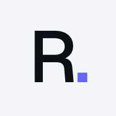

Pendant ce temps…
Vendredi 15 h 15 MaxDirecteur d'agence
MaxDirecteur d'agence
 EmmaAssistante de direction
EmmaAssistante de direction
 LucasAnalyste de marché
LucasAnalyste de marché
 ChristineConseillère juridique
ChristineConseillère juridique
 ZoéCommunity manager
ZoéCommunity manager
 RaphaëlPhotos et visuels
RaphaëlPhotos et visuels
EmmaAssistante de direction
Rappel prêt, à validerEnvoyé à Camille sur WhatsApp
À valider43
-
Rappel de visite · ven. 16 oct. 17h15
expire dans 2 hÀ Camille Durand · WhatsApp
Bonjour Camille, je vous rappelle notre visite aujourd'hui à 17h15 au 12 rue des Lilas. À tout à l'heure ! — Denis Moreau, Agence du ParcValiderRefuserValidation… ✓ ValidéDétailsVoir dans le fil
LucasAnalyste de marché
Analyse les ventes du quartierAvis de valeur prêt
Avis de valeur · 27 avenue Jean-Jaurès
PDFPour Mme Bernard · prix au m² du quartier, ventes DVF
Prix recommandé332 000 €
Fourchette 318 000 – 346 000 € · 14 ventes comparables à moins de 500 m
ChristineConseillère juridique
Vérifie les pièces du compromisRelance prête, à valider
Compromis de M. et Mme Roche · 5 pièces sur 7
Titre de propriétéreçu
Diagnostics (DPE, amiante, électricité)reçus
Dernière taxe foncièrereçue
Pièces d'identité des vendeursreçues
Règlement de copropriétéreçu
Procès-verbaux des 3 dernières AGmanquent
Carnet d'entretien de l'immeublemanque
Relance des pièces du compromis
e-mailÀ M. et Mme Roche · E-mail
ValiderRefuser
MaxDirecteur d'agence
Écoute ton vocalConfie la relance à Emma
EmmaAssistante de direction
Écrit au notaireMail prêt, à valider
Revalyton équipe
0:04
Max
C'est noté. Emma prépare le mail pour Maître Lefèvre.17:55Emma
Mail à valider : relance de Maître Lefèvre pour la signature de jeudi.17:56✅ Valider❌ Refuser
ZoéCommunity manager
Prépare le post « Vendu »Post prêt, à valider
Publication · Instagram et Facebook
1 photo VENDU
VENDU
Vendu en 12 jours. Merci à M. Lambert pour sa confiance : cette maison de Tassin a trouvé ses nouveaux propriétaires.
ValiderRefuser
EmmaAssistante de direction
Routine du vendredi 17 hBilans de commercialisation prêts (6)
Bilan de commercialisation du vendredi
Le vendredi à 17 h → Emma prépare pour chaque vendeur son bilan de commercialisation de la semaine → sur Telegram
6 bilans de commercialisation préparés
M. et Mme Garnier · 12 rue des Lilas3 visites
Mme Petit · T2 place Bellecour2 visites
M. Henry · T4 Croix-Rousse4 visites
Mme Faure · studio rue Duguesclin1 visite
Mme Morel · maison d'Écully2 visites
M. Blanc · T3 Monplaisir3 visites
Ce que voient tes clients
Camille Durand · acquéreuseWhatsApp
« Bonjour Camille, je vous rappelle notre visite aujourd'hui à 17h15 au 12 rue des Lilas. À tout à l'heure ! »
M. Garnier · vendeurE-mail
« Votre bilan de commercialisation : 3 visites cette semaine, dont un couple qui souhaite revenir avec un artisan. »
Maître Lefèvre · notaireE-mail
« Maître, je reviens vers vous pour la signature de jeudi : pouvez-vous me confirmer l'heure ? »

Emma · Rappel de visite à validermaintenant
Camille Durand · ven. 16 oct. 17h15
Revaly.
Une équipe d'agents IA
qui travaille vraiment pour toi.
Jusqu'à 15 h par semaine rendues. Plus rien d'oublié.
Essayer 7 joursRéserver une démo
Jusqu'à 15 h : le détail du calcul, tâche par tâche, est sur revaly.io
15 h 15.
Tu fais visiter.
vocal · 0:04« Max, relance le notaire pour jeudi »